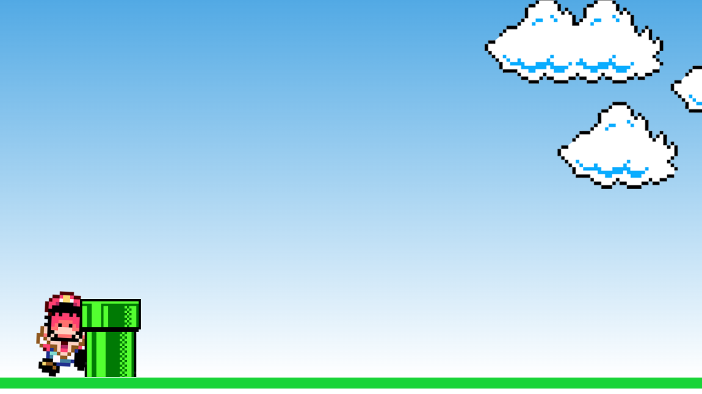
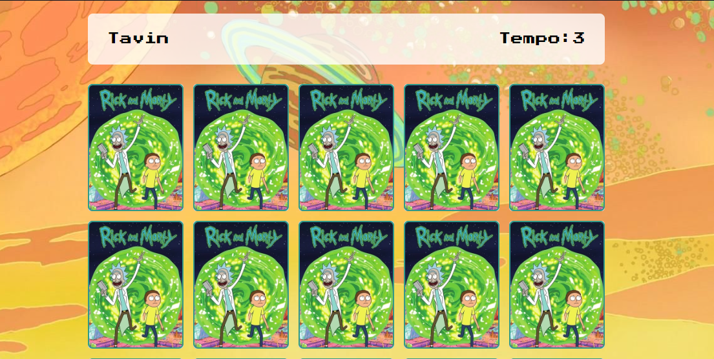

Sobre mim

Informações
"Meu primeiro projeto utilizando HTML, CSS e JavaScript. Consiste em replicar um simples jogo do mario no Browser, onde ao clicar realizar um comando através do EventListener o Mario pula!"

Informações
"Este projeto foi desenvolvido com base em JavaScript, HTML e CSS. Ele simula um jogo de memoria com cartas prontas de forma randomica através do Math.random e um Array, aonde fica armazenadas as figuras."